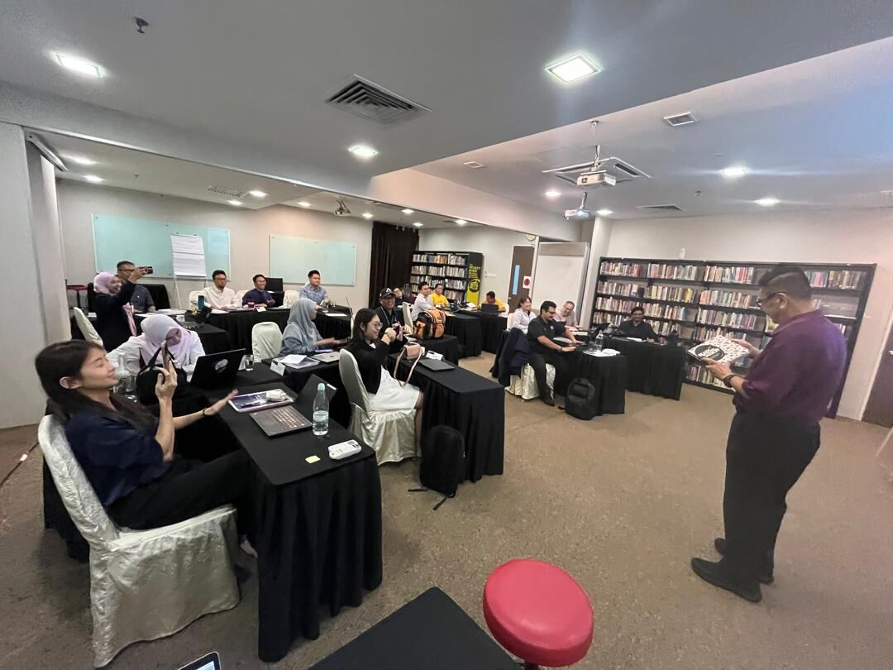

On Day 3 we moved from the hotel to the Malaysian Institute of Management’s office in the PJ33 building, Seksyen 13: a smaller room, cluster tables, flipcharts on easels and a wall of books. It felt more like a workshop and less like a conference. That suited the day, because Module 4 was about the part of training that terrifies people most: standing up and delivering.

What Do People Fear the Most?
Module 4 opened with a bar chart (Janek Tuttar, 2011) ranking people’s biggest fears. Number one, at 19.6%: public speaking. Heights came second. Death was further down at 9.7%. As the old joke goes, at a funeral most people would rather be in the coffin than giving the eulogy.
Prisoners, Vacationers and Explorers
Dr Raymond sorted every training audience into three types, and I recognised all of them from my own lecture halls:
The Prisoner
Sent by the boss. Resents being here. Minimal interest. (In university terms: the compulsory-subject student.)
The Vacationer
Here for the break, the buffet and the free pen. Playful, passive.
The Explorer
Curious, engaged, ready to learn. The dream.
The trainer’s job is to turn prisoners and vacationers into explorers. The tools for that turned out to be surprisingly measurable.
The Rules Behind Engagement
Bob Pike’s rule
No more than 90 min without a break, 20 min of lecture at a stretch, and involve the audience every 8 minutes.
Mehrabian
Body language 55%, voice 38%, words 7%. How you say it matters more than you think.
Learning pyramid
Retention after 24 h: lecture 5%, demonstration 30%, discussion 50%, practice 75%, teaching others 90%.
The Ebbinghaus forgetting curve showed retention collapsing over days, then resetting with each review. The primacy and recency effect explained why the opening and closing of a session are remembered best and the middle sags. That’s why the middle needs engagement, activities and questions to hold it up.
Lecturer confession #3: A standard university lecture is 2 hours. By Bob Pike’s rule, I should be involving students about 15 times per session. On a good day, I manage “any questions?” twice. On a bad day, the only interaction is the attendance sheet.
The 4Ps of Delivery
- PreparationStimulate interest: the what, the why, the wow. Create relevance.
- PresentationExplain using questions, lots of examples, training aids.
- PracticeDemonstrate, then let them try, then give feedback.
- PerformanceAssess whether they can apply it.
Voice, Body and the Three Golden Rules
We watched short clips of famous speakers and broke down their technique. For the voice there were five Ps: projection, pace, pitch, pause, precision. For energy, the advice was to start at level 3. If you open at normal conversational energy and fade, the room literally falls asleep (the slide had cartoon learners to prove it). Filler words got their own “Avoid Them!” slide: you know? umm, okay? right? ahh, er. I have a sneaking suspicion “okay?” is my personal favourite.
Then came my favourite slide of the entire programme:
The 3 Golden Presentation Rules:
#1 Rehearse. #2 Rehearse. #3 See rules #1 and #2.
We were also pointed to PowerPoint’s Rehearse with Coach feature, which listens to you and reports your pace, filler words and sensitive phrases. I suspect more than a few of us went home that night and talked to our laptops.
The presentation checklist we would be judged on had 17 items. They included: eye contact more than 90% of the time; an opening wow with “What’s in it for me?” and “Are you ready?”; talk to the participants, not to the slides; engagement every 8 minutes; analogies; “example, example, example”; debriefs and transition statements; appropriate humour; and smile and have fun. I liked that humour and fun were on the official checklist. It isn’t fluff. It’s graded.
Facilitation: Tell, Show, Do, Feedback
Presenting is talking to people; facilitating is learning with them. The core rule on the slide was: “A trainer’s primary goal is to ensure active engagement and participation by the learners to achieve the learning objectives.” The practical process is beautifully simple: Tell them how, Show them, let them Do it, then give Feedback that is constructive and actionable. It’s exactly how we teach lab sessions, and almost never how we teach lectures.
Questioning got the FOID treatment, a ladder for building questions:
Fact
What do you know or recall?
Opinion
What do you think or feel?
Importance
Why does it matter?
Do
How will you apply it?
And when someone asks a question you can’t answer? Focus, listen, rephrase, repeat, then either answer briefly, redirect it to the room (“Has anyone here dealt with this?”), or honestly defer it to later. Carl Rogers from Day 1 nodded approvingly.
The Difficult Learners Field Guide
This section was pure entertainment, because everyone in the room had met every one of these people, and possibly been a few of them:
| Learner | What to do |
|---|---|
| The Talker | Acknowledge them, then: “Let’s hear what others have to say.” |
| The Quiet One | Ask a directly relevant question and call them by name. |
| The Sleeper | Move closer. Ask a question. (Proximity is a powerful alarm clock.) |
| The Arguer | Acknowledge their passion, ask for evidence, find common ground, or take it offline. Keep calm. |
| The Late Comer | Remind everyone of the ground rules, and thank the punctual ones. |
| The Bored | Create relevance, engage, call by name. |
And the don’ts: never argue, insult, ignore, get defensive, show anger, or let one participant hijack the session. We also went through eight seating layouts (cabaret, cluster, classroom, chevron, boardroom, U-shape, theatre, auditorium), and the “good training room” award went to cluster tables. That was exactly how MIM had set up our room. Point taken.
Module 5: Did the Training Actually Work?
The last module was the one my engineer brain enjoyed most, because it has numbers. Training effectiveness evaluation uses Kirkpatrick’s four levels plus Jack Phillips’ ROI:
Level 1, Reaction, is the familiar “happy sheet”. Level 2, Learning, is post-test minus pre-test. Level 3, Behaviour, needs 3 to 6 months and was labelled the weakest link in the chain, because it’s where the classroom meets the real job and good intentions go to die. Level 4, Results, needs 6 to 12 months and a clever trick for isolating the effect of the training from everything else going on:
Sales rose by 1,000 units. Participants estimate training contributed 40%, and they’re 90% confident in that estimate.
Credit to training = 1,000 × 0.40 × 0.90 = 360 units.
The slide’s wise note: “Be satisfied with evidence when proof is not possible.”
Then Level 5, ROI: convert the benefits to money, add up the full cost of the programme (analysis, development, delivery, evaluation, including people’s salaries), and compute (benefit − cost) / cost. The worked example in the manual produced RM183,000 in benefits against RM37,373 in costs, an ROI of 389%. If you ever need to convince a CFO that training is not just a cost centre, that slide is your friend.
Closing the Loop
The programme wrapped up the way every module had: key takeaways, a reflection on the objectives, the five-module roadmap ticked off, and an action plan. For us, the action plan is real. After the TTT certificate of completion comes the HRD Corp accreditation step, with documents and videos to submit and up to six months of support from MIM.
But first there was a small matter of two days of assessed presentations, in front of a room full of experts from every industry imaginable. My heart rate went up just typing that sentence.
Design gets them in the room. Delivery keeps them there. Evaluation proves it was worth it.
Continue to part 4: 18 Presenters, One Nervous Lecturer, the presentations, the photos, and an unexpected gift.